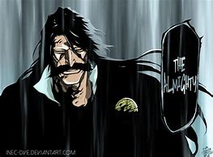

Yhwach
Yhwach The Almighty
Yhwach (ユーハバッハ, Yūhabahha), called "Your Majesty" (陛下, Heika) by his underlings, is the emperor of the Wandenreich and
the progenitor of Quincy, known as the Quincy King (滅却師クインシーの王, Kuinshī no Ō) and Father of Quincy (滅却師クインシーの父, Kuinshī
no Chichi).[3][4][5] He is also the son of the Soul King[6] and inherited the latter's signature power, The Almighty,[2]
signified by Yhwach bearing the letter A.[1]
<
He Isn't The "First" Quincy. Though he is considered to be the "Father of the Quincy" today, he …
Was Born With No Senses & Unable To Move. When Yhwach was born, he could not see, …
He's Son Of The Soul King. After Aizen's failed attempt to take over the Soul Society in one of …
Lille Barro Upon Whom He Bestowed A Schrift. Sternritters are unique in how they each carry …
Yhwach can manifest the Reishi that he collects as standard Quincy arrows and can even fire them without a bow, with his
standard weapon actually being a sword. Yhwach's talent in manipulation is further …